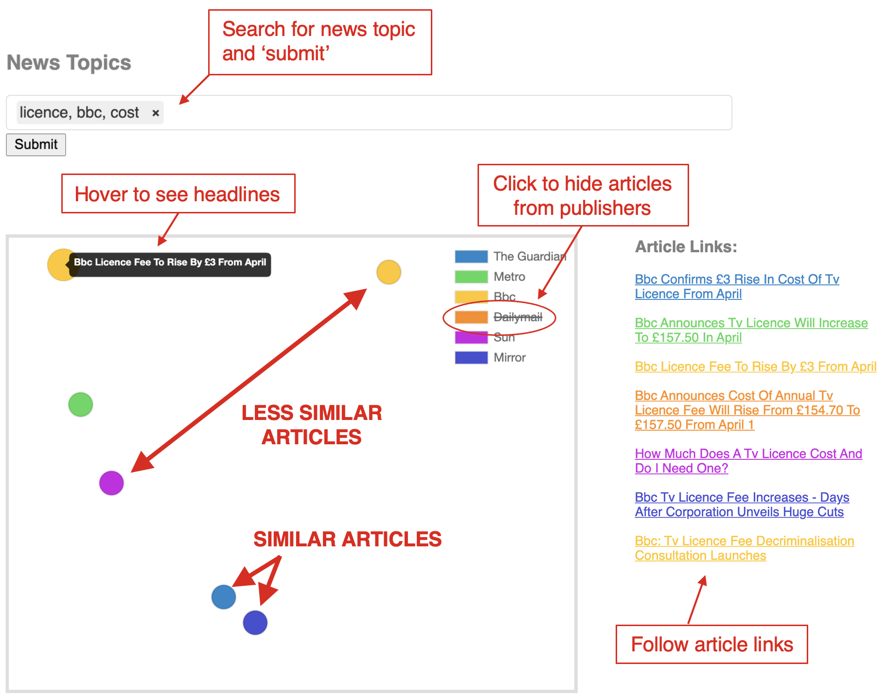

News Bias Visualisor
This tool is designed to allow users to compare how different publishers report on media events. The
closer
articles are to eachother, the
more similar
their reporting.

Get Started